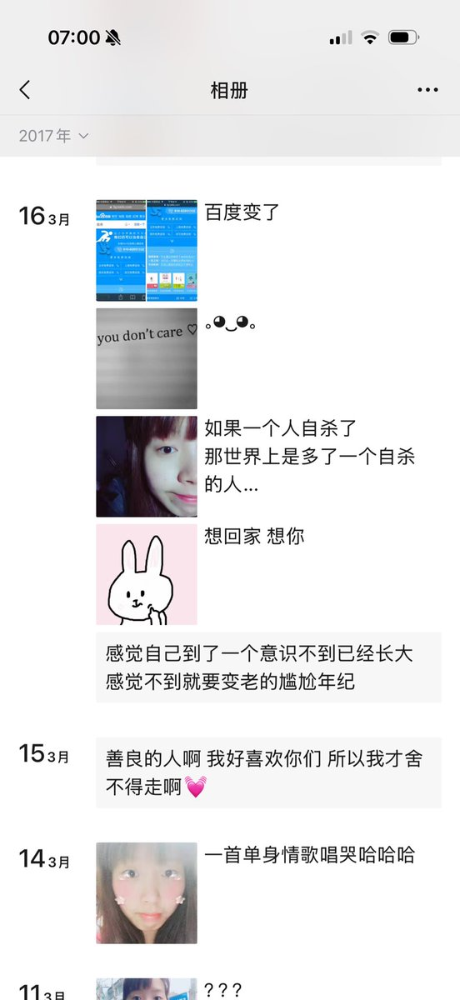

Siper
@Siperistic
@NataliyaRo4040 推上善良的人还是蛮多的

NataliyaRose
@NataliyaRo4040
X上的网友真的很好。
大学成功保研后，我一度陷入了轻度抑郁，觉得人生突然没有了目标，活着没有什么意义。
每天一个人坐在宿舍发呆，坐久了就去超市买一大袋零食，然后一次性吃掉。
仿佛只有不断进食，把胃填满，我才能短暂地脱离空虚，体重一下飙到了145斤。 https://t.co/Ar7RgcZy6z